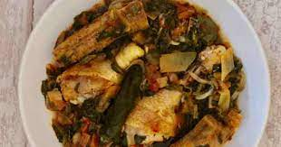

Ingredients
- 4 chicken thighs
- 2 onions , chopped
- 2 leeks (white and green parts), thinly sliced
- 4 green bell peppers , seeded and cut
- 4 tomatoes , peeled, seeded, and diced
- 5 celery stalks , chopped (including leaves)
- 4 plantain bananas , peeled, cut in half lengthwise and then cut in half
- 10 oz. spinach , fresh or frozen
- 3 tablespoons tomato paste
- 4 tablespoons sunflower oil
- 1 hot pepper (optional)